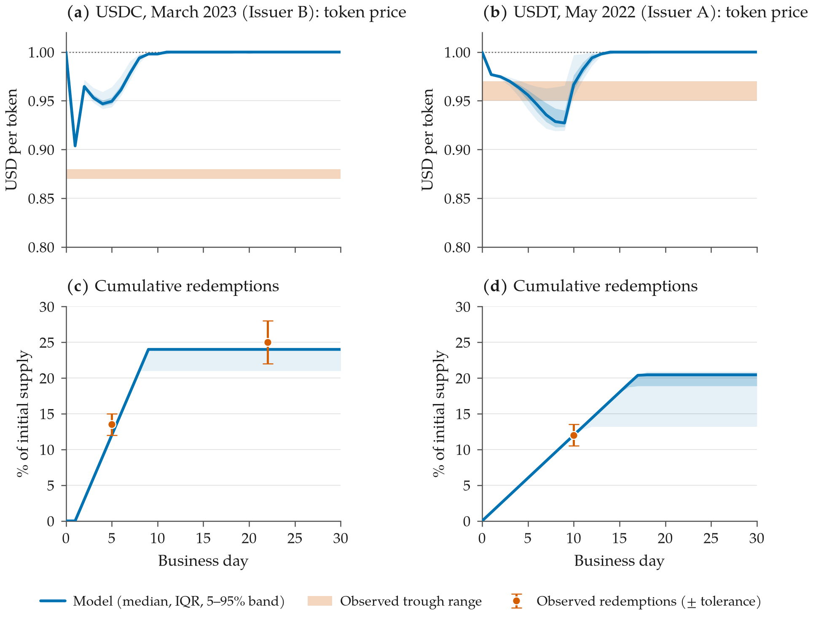
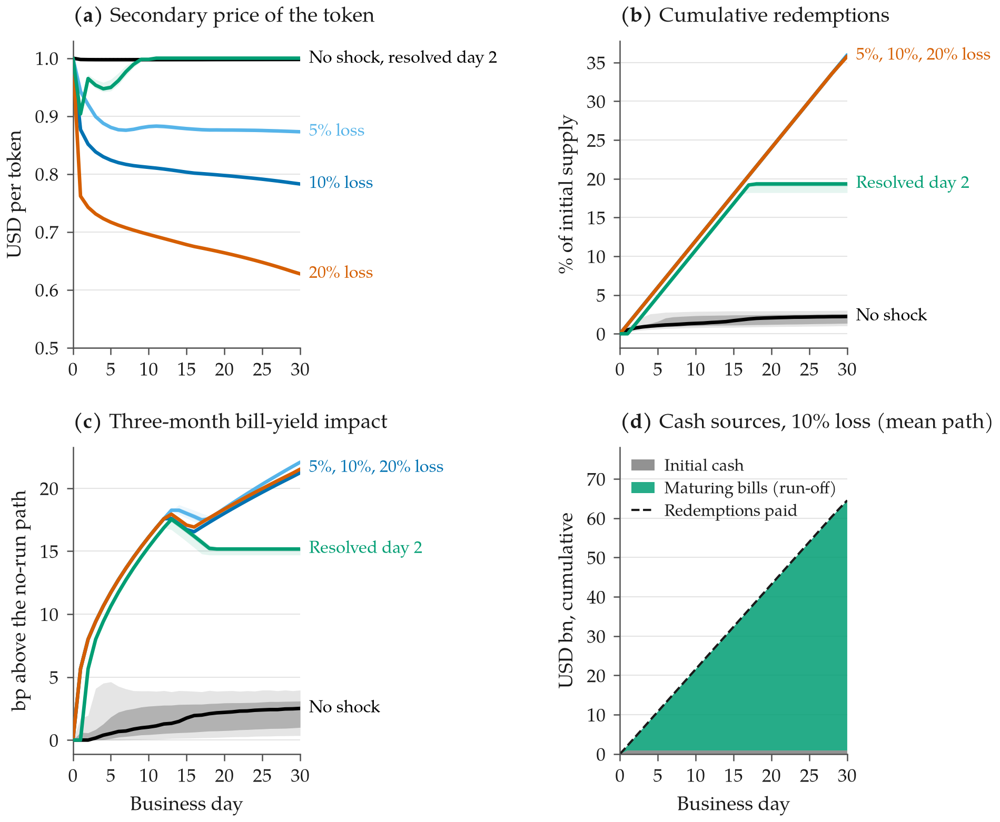
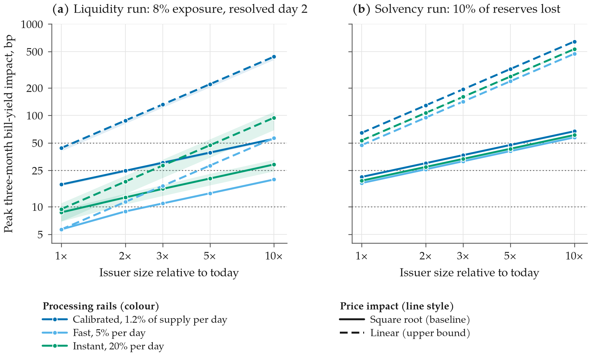
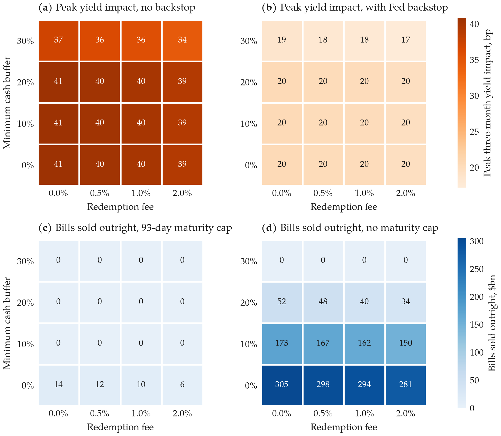
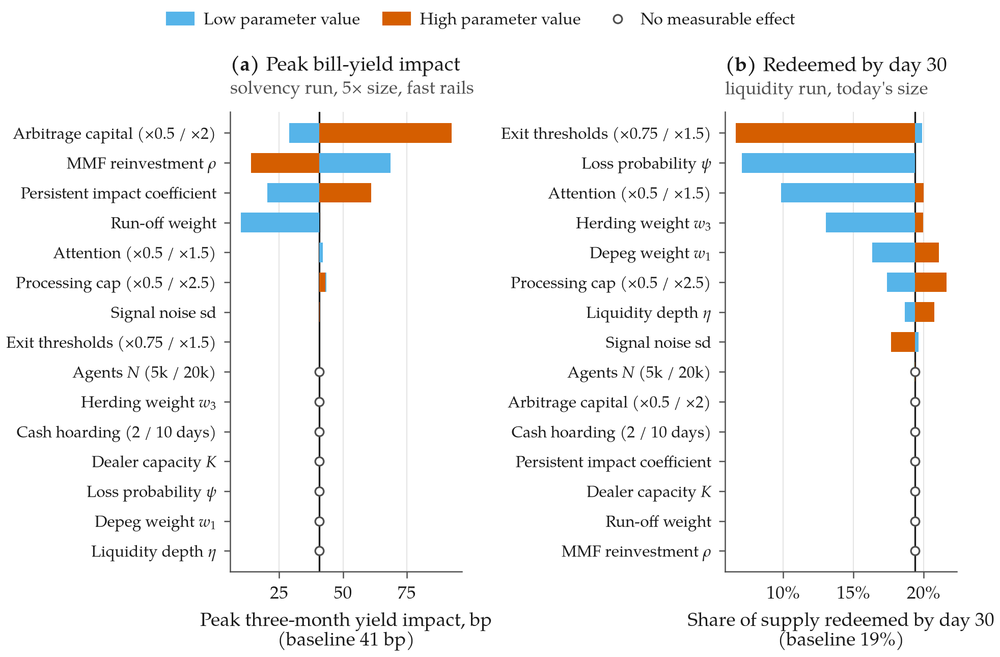
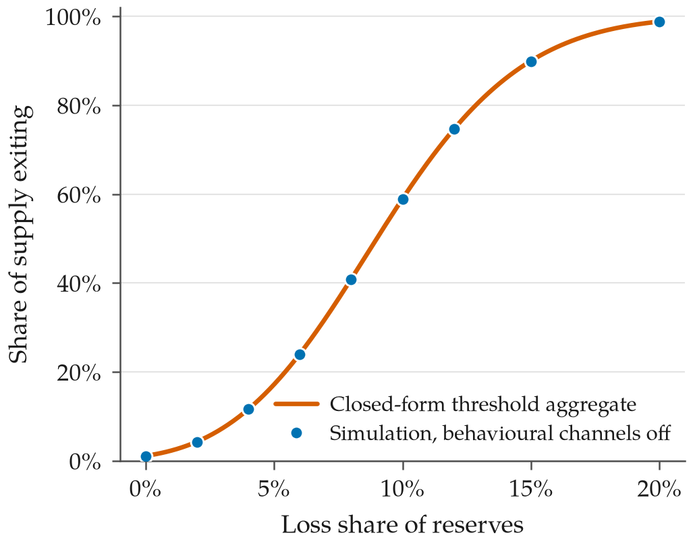
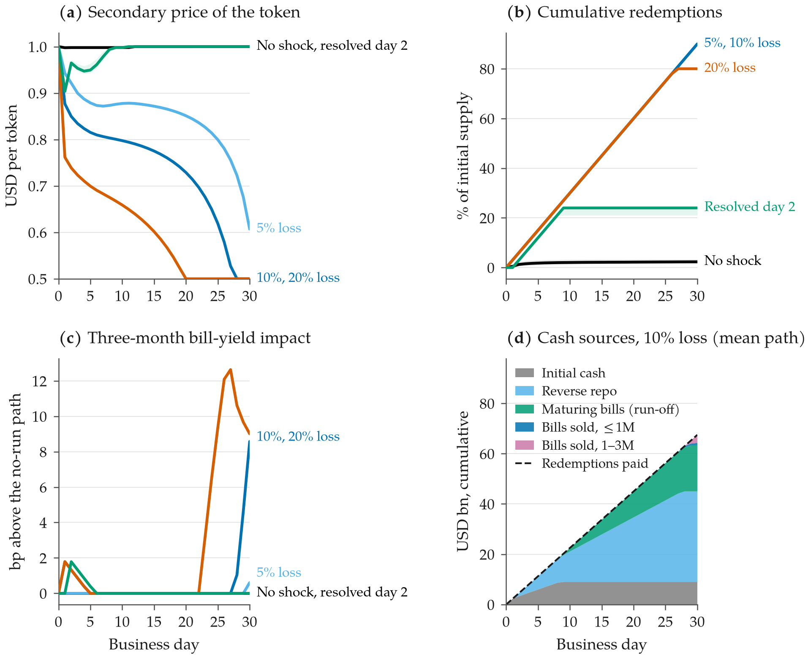

1 Introduction
Payment stablecoins are money-like liabilities backed by portfolios that look increasingly like those of government money market funds. The two largest issuers alone report well over $200 bn of US Treasury bills, reverse repo and government money market fund shares, and the GENIUS Act signed in July 2025 confines permitted reserve assets to cash, insured deposits, bills with no more than 93 days to maturity, Treasury-backed repo and government money market funds (United States Congress 2025, all institutional figures used in this paper are listed for verification in the repository). A growing empirical literature documents that stablecoin flows already move the front end of the Treasury curve in normal times (Ahmed and Aldasoro 2025), and the Treasury Borrowing Advisory Committee has discussed stablecoins as a structural source of bill demand (Treasury Borrowing Advisory Committee 2025).
What happens to that demand when a stablecoin runs? Two episodes give partial answers. In May 2022 Tether redeemed roughly a tenth of its supply in two weeks after the collapse of Terra, with a brief and shallow depeg. In March 2023 USDC fell to about 88 cents over a weekend after Circle disclosed that $3.3 bn of its reserves sat at Silicon Valley Bank, recovered within two days once deposits were guaranteed, and still lost about a quarter of its supply over the following month (Circle 2023; Tether 2022). Neither episode disturbed the bill market, but neither involved an issuer of today’s size, let alone the multiples that industry projections contemplate. The question this paper asks is quantitative: when a run happens, how much bill-market dislocation does the forced liquidation of reserves cause, through which channel, and at what sector size does it become a financial-stability concern?
Two episodes are too few for econometrics, so we answer with a calibrated agent-based model. Holders are heterogeneous in size, information, attention and access to the issuer: institutions and arbitrageurs can redeem at par, retail and most exchanges can only sell on a secondary market. Exit decisions follow a global-games-style threshold rule on a private signal about reserve impairment, a visible depeg, peer behaviour and a suspension flag. The secondary price carries a fundamental discount (the expected loss share of whoever remains) and a liquidity discount proportional to the stock of tokens that arbitrageurs have not yet absorbed. The issuer pays redemptions through a waterfall (cash, repo, money market fund shares, bills shortest-first, other assets at a haircut), subject to a daily processing capacity, and manages liquidity by keeping cash for pending claims and rolling the rest of its maturing bills. The bill market absorbs outright sales and demand withdrawn at auction with a persistent and a temporary impact component, a dealer-capacity penalty and a reinvestment leak through which redeemed cash returns via money market funds. A second issuer receives a belief spillover from the first. The model nests a closed-form threshold aggregate when the behavioural channels are switched off, and we show that the simulation reproduces it exactly.
Our contribution is threefold. First, we quantify the spillover and identify its channel. At today’s size a run on the largest issuer, whether a liquidity scare or a 10% loss of reserves, moves three-month bill yields by 17–21 bp in the model, and the issuer sells no bills outright: with processing capacity of about 1.2% of supply per day, redemptions are funded entirely by the $2.8 bn a day of maturing bills. The externality is demand withdrawn at auction, not a fire sale, and the issuer’s fire-sale loss is negligible because the bills it would sell have a duration of weeks. Second, we turn “stablecoins might be systemic one day” into a number. Under square-root impact, the 25 bp threshold is crossed at 1.4–2 times today’s size and the 50 bp threshold at 5.5–8 times; under linear impact, the upper bound, both are crossed already today. Third, we rank levers. A minimum cash buffer of 20–30% removes the footprint of a liquidity run and cuts that of a solvency run by about two thirds; the 93-day maturity cap converts outright sales into orderly non-rollover; redemption fees do little; redeeming at net asset value rather than par cuts the depeg by a third; a Fed backstop that halves impact halves the footprint by construction. Sensitivity analysis shows a clean separation: the size of a run is governed by behavioural parameters (thresholds, attention, the perceived probability of loss), whereas its Treasury-market footprint is governed by plumbing (how much redeemed cash returns to bills, arbitrage capital, the accounting of non-rollover) and barely by behaviour at all.
The rest of the paper proceeds as follows. Section 2 sets out the institutional mechanics. Section 3 relates the paper to the literature. Section 4 presents the model, Section 5 its calibration and validation, Section 6 the results, Section 7 robustness, Section 8 policy implications. Section 9 concludes. Appendices give the parameter table, pseudo-code and additional figures. Code, configuration and every table in this paper are reproducible from the repository with one command.
2 Institutional background
Redemption mechanics.
A payment stablecoin is a token redeemable at par from its issuer, but direct redemption is available only to verified counterparties above a minimum size: for the largest offshore issuer, verified customers with a minimum of $100,000 and a 0.1% fee; for the largest US-regulated issuer, institutional customers of its minting platform (Tether 2026; Circle 2026). Everyone else obtains dollars by selling the token on exchanges. The peg is therefore maintained by arbitrageurs who buy discounted tokens on the secondary market and redeem them at par, and the depth of that arbitrage is bounded by their capital and by the issuer’s processing capacity (Ma et al. 2023; Lyons and Viswanath-Natraj 2023). During the USDC weekend of March 2023, redemption was unavailable because banks were closed, arbitrage capital stood aside, and the secondary price cleared at a discount of about twelve cents. Once redemption resumed and the Silicon Valley Bank exposure was resolved, the discount closed in a day, but holders who had decided to leave kept redeeming through the following weeks.
Reserve rules.
The GENIUS Act requires one-for-one backing in US coins and currency, insured deposits, Treasury bills with at most 93 days to maturity, Treasury-backed repo and reverse repo, shares of government money market funds invested in the same assets, and central bank reserves; issuers must publish monthly reserve reports and disclose their redemption policy, and may not pay interest to holders (United States Congress 2025). Issuer attestations at mid-2026 report reserve mixes that already resemble this list: the largest offshore issuer holds roughly two thirds of its assets in bills directly, with reverse repo, money market fund shares and a residual of other assets (bitcoin, gold, secured loans); the largest US-regulated issuer holds about an eighth in bank deposits and the rest in a government money market fund that invests in short bills and overnight repo (Tether 2026; Circle 2026). These are the two reserve profiles we model as “Issuer A” and “Issuer B”; the figures are defaults from public reports as remembered by the authors and must be replaced with the latest attestation before publication.
The bill market.
Treasury bills outstanding are of the order of $6–7 tn, with daily trading volume in the hundreds of billions; money market funds and foreign official holders are the largest holders, and primary dealers intermediate secondary trading subject to balance-sheet constraints that proved binding in March 2020 (Duffie 2020; Vissing-Jorgensen 2021; He et al. 2022). Two features matter for a stablecoin run. First, bills are the most liquid instrument in the world, so the price impact of even large flows is measured in basis points, not percent; the empirical elasticity of three-month bill yields to stablecoin flows is a few basis points per $3–4 bn over ten days, with outflows mattering more than inflows (Ahmed and Aldasoro 2025). Second, a bill portfolio self-liquidates: a $120 bn ladder of bills with an average maturity of one to two months returns about $3 bn of cash every business day without any sale. An issuer facing redemptions can meet them by not rolling its maturities, which withdraws demand at auction rather than adding supply in the secondary market. Both channels affect yields; only the second is a fire sale in the usual sense, and only the second touches dealer balance sheets.
The March 2020 analogue.
Prime money market funds lost about 15% of assets in two weeks in March 2020, sold commercial paper and bills into dislocated markets, and were backstopped by the Money Market Mutual Fund Liquidity Facility after ten days (Li et al. 2021; Board of Governors of the Federal Reserve System 2020). We use this episode to discipline the behaviour of other bill holders and the design of the backstop lever.
3 Related literature
The paper sits at the intersection of three literatures. The first studies stablecoin runs. Gorton and Zhang (2023) argue that privately issued stablecoins are the wildcat banknotes of our time; Anadu et al. (2023) document that stablecoin flows during 2022–23 resembled money market fund runs and flights to safety; Ma et al. (2023) show that the centralisation of arbitrage, which we model as a capital- and capacity-constrained arbitrage bid, trades off peg stability against run risk; Lyons and Viswanath-Natraj (2023) study what keeps the peg; d’Avernas et al. (2022) and Bertsch (2023) provide theoretical models of stablecoin fragility; Liao and Caramichael (2022) and Barthélemy et al. (2023) analyse the growth of stablecoins and their reserve holdings; Bank for International Settlements (2025) frame the policy debate around the singleness, elasticity and integrity of money. The second literature concerns runs and fire sales more generally. Our threshold rule is a reduced form of the global-games equilibrium of Goldstein and Pauzner (2005), in the tradition of Diamond and Dybvig (1983), and our fire-sale cost follows Morris and Shin (2016), Shleifer and Vishny (2011) and Greenwood et al. (2015); the stress-testing use of fire-sale externalities follows Cont and Schaanning (2017). The third literature concerns the Treasury market: the price-impact anchor comes from Ahmed and Aldasoro (2025), the market-structure and March 2020 evidence from Duffie (2020), Vissing-Jorgensen (2021), He et al. (2022) and Fleming (2003), and the decomposition of impact into permanent and temporary components from Kyle (1985) and Almgren and Chriss (2001), with the square-root shape documented by Bouchaud et al. (2018). Methodologically we follow the agent-based tradition advocated by Farmer and Foley (2009) and use one-at-a-time and global sensitivity designs (Saltelli et al. 2008; Morris 1991). What is new is the bridge: a calibrated model in which run dynamics, redemption plumbing and bill-market impact are in one place, so that the size of the spillover, its channel and the leverage of policy can be computed rather than asserted.
4 Model
Time is discrete in business days with . All quantities are vectorised over Monte Carlo paths. We describe one issuer; the second issuer (Section 6.4) is identical with a belief spillover.
4.1 Holders
There are holders of five types : retail, exchanges and market makers, DeFi protocols, institutional treasuries and arbitrageurs, with shares of supply and holdings drawn lognormally within type. Only institutional holders and arbitrageurs have direct access to the issuer. At the start of the run the public learns that a share of reserves is exposed (for example, deposits at a failed bank). A share of the exposure is actually lost; the market assigns probability that an unresolved exposure becomes a loss, so the expected loss is until a resolution day on which the public learns the realised loss . Because the issuer pays at par, the loss falls on whoever has not left: the expected loss share of a remaining holder is (1) where is the public expected loss as a share of initial supply and is remaining supply. Holder observes with a private noise fixed over the episode, , and forms an exit signal (2) where is a decaying herding state, is a common daily sentiment shock and is yesterday’s secondary price. Holder pays attention on a given day with a type-specific probability and exits if exceeds a threshold . An exited holder re-enters, buying tokens back at the market price, if the core signal (the first four terms of (2), without the depeg term) has fallen below : once fundamentals are fine, a discount is a buying opportunity rather than a reason to stay away. Direct-access holders who exit join the issuer’s redemption queue at par; all others sell on the secondary market.
The threshold rule is a reduced form of a global game. In Goldstein and Pauzner (2005), agents with private signals about a fundamental coordinate on a unique cutoff; here the cutoffs are heterogeneous by type because redemption access, holding size and costs differ, and we calibrate their level rather than derive it. Appendix C shows that with the herding, depeg and suspension channels switched off and held fixed, the share of supply that exits converges exactly to the closed-form aggregate , so the simulation nests a transparent benchmark.
4.2 Secondary market and arbitrage
Tokens offered on day are new sales plus the overhang of tokens held by uninformed dip buyers who resell. Demand at par from re-entering holders is served first. Arbitrageurs then buy (3) if the discount covers the redemption fee plus their cost, where is daily arbitrage capital as a share of supply, the issuer’s daily processing capacity as a share of supply, the number of days of capacity within which they require their claim to clear, and the redemption queue; a suspended issuer removes the arbitrage bid entirely. The remainder stays as overhang and sets the liquidity discount. The secondary price is (4) a fundamental discount equal to the expected loss share of remaining holders plus an inventory-type liquidity discount proportional to the stock of unabsorbed tokens. Arbitrage purchases join the redemption queue at par.
4.3 Issuer
Reserves are held in cash and deposits, overnight reverse repo, money market fund shares, bills of at most one month (), bills of one to three months () and other assets. Impairment removes the realised loss from the least liquid assets first (other, then cash, then money market fund shares, then repo); bills are never impaired. Each day a uniform ladder matures: runs off into cash over 21 business days and rolls into over 42. The issuer processes through a waterfall: cash, repo and money market fund shares (no price impact), then bills shortest-first at the current price concession, then other assets at a 30% haircut; if the waterfall cannot raise the cash the issuer is suspended for the day. Liquidity management is explicit: the issuer keeps cash for the pending claims it can pay within days and rolls the rest of the day’s maturities back into bills, so the cash buffer is spent, not rebuilt, during a run. Maturities kept as cash are bill demand withdrawn at auction. Net asset value marks bills at the current concession. A policy switch lets the issuer redeem at net asset value instead of par, in which case the loss is shared pro rata and does not grow with redemptions.
4.4 Bill market
Let be cumulative net demand withdrawn from the bill market, , where a share of each day’s redemption payments returns to bills through money market funds after a lag (buys), and weights non-rollover relative to a sale. Dealer inventory builds only from outright sales and is absorbed by other holders at rate . The three-month yield deviation from its no-run path is (5) with for and beyond the anchor flow (square-root impact, the baseline), or throughout (linear impact, the upper bound). The coefficients are anchored so that a $3.5 bn outflow raises the three-month yield by about 7 bp after ten days, the outflow elasticity reported by Ahmed and Aldasoro (2025) (to be verified), with buys acting at a third of that strength. The fire-sale loss on bills sold is face value times duration times the yield deviation, with durations of 0.04 and 0.17 years for the two buckets. A Fed backstop, when active from day two, removes the dealer-capacity penalty and halves the impact coefficients, a stylised Money Market Mutual Fund Liquidity Facility.
4.5 Timing, outputs and experiments
Within a day: beliefs and signals update; holders exit or re-enter; exits route to the queue or the secondary market; the secondary market clears; the ladder runs off and the issuer processes the queue through the waterfall; the issuer manages liquidity; the bill market updates; losses, net asset value and all series are recorded. Each scenario is run for 1,000 Monte Carlo paths in the baseline and 200–300 in the grids; a path draws thresholds, private signals and common shocks, and a run is defined as cumulative redemptions of at least 20% of initial supply by day 30. Five experiments follow the pre-registered design: E1 baseline shocks on Issuer A, E2 scaling of issuer size, E3 a policy grid, E4 contagion to Issuer B, and E5 sensitivity.
5 Calibration and validation
Table 6 in Appendix A lists every parameter with its value and source. Issuer sizes and reserve mixes are defaults from public attestations ($180 bn for Issuer A with 66% bills, 10% reverse repo, 4% money market funds, 0.5% cash and 19.5% other assets; $75 bn for Issuer B with 12% deposits and the rest in a government fund holding 40% bills and 48% repo on a look-through basis); both are flagged for verification. Market-side parameters (impact coefficients, dealer capacity, reinvestment) are anchored on the literature or set by assumption and varied in Section 7.
The behavioural and plumbing parameters that the literature does not pin down are calibrated on two episodes. The USDC episode of March 2023 is represented, for Issuer B, as an 8% exposure with no processing on business day 1 (the weekend) and resolution on day 2; targets are a trough of 0.87–0.88, redemptions of 12–15% of supply in the first week and about 25% after a month. The USDT episode of May 2022 is represented, for Issuer A, as a feared exposure resolved after ten days of successful redemptions; targets are a trough of 0.95–0.97 and redemptions of about 12% in two weeks. All targets are from memory and listed for verification. A two-stage grid fits the shared parameters (liquidity depth , a common scale on the exit thresholds, the depeg weight , the loss probability and the size of the feared USDT exposure) jointly with issuer-specific processing capacity and arbitrage capital, minimising the sum of squared standardised target errors. The best fit has , threshold scale 1, , , a feared USDT exposure of 2%, processing capacity of 1.2% of supply per day for Issuer A and 3% for Issuer B, and arbitrage capital of 1.1% and 3% of supply per day.
Table 1. Validation against the two calibration episodes (300 paths, 10,000 agents). “Observed” is the target with its tolerance; is the model minus the observed value in units of the tolerance; days are business days. All observed values are to be verified.
| Episode | Target | Observed | Model | |
|---|---|---|---|---|
| USDC, March 2023 (Issuer B) | Minimum price | 0.904 | ||
| Redeemed by day 5 | 12.0% | |||
| Redeemed by day 22 | 24.0% | |||
| USDT, May 2022 (Issuer A) | Minimum price | 0.925 | ||
| Redeemed by day 10 | 12.0% | 0.0 |

Table 1 and Figure 1 show the fit. Redemption volumes are matched in both episodes: 12% of USDC supply in the first week against 12–15% observed, 24% after a month against 25%, and 12% of USDT supply in two weeks. Processing capacity is the binding constraint in both, which is why the fitted capacities are low: 1.2% of supply per day is about $2 bn for Issuer A, close to what Tether actually paid out per day in May 2022, and 3% is about $2.3 bn for Issuer B. The model under-predicts the depth of the USDC trough (0.90 against 0.875) and over-predicts that of USDT (0.93 against 0.96); a single liquidity-depth parameter cannot reproduce both a thin weekend crypto market with banks closed and a deep weekday market. We report this as a limitation rather than add a weekend-specific parameter, and note that the discrepancy affects the price channel only: the bill-market results below depend on redemption volumes and timing, which are matched.
6 Results
6.1 Baseline dynamics (E1)

Table 2. E1 baseline, Issuer A: 1,000 Monte Carlo paths, 30 business days. Medians across paths unless stated. “8% exposure, resolved day 2” is the calibrated liquidity scare: no processing on day 1, exposure resolved without loss on day 2.
| No shock | 5% loss | 10% loss | 20% loss | 8% exposure, resolved day 2 | |
|---|---|---|---|---|---|
| Run | |||||
| Minimum token price | 0.997 | 0.872 | 0.783 | 0.628 | 0.904 |
| Redeemed by day 7 | 1.2% | 8.4% | 8.4% | 8.4% | 7.2% |
| Redeemed by day 30 | 2.2% | 36.0% | 35.8% | 35.8% | 19.3% |
| P(redemptions 20%) | 0% | 100% | 100% | 100% | 0% |
| P(redemptions 50%) | 0% | 0% | 0% | 0% | 0% |
| P(any suspension day) | 0% | 0% | 0% | 0% | 0% |
| Treasury-bill market | |||||
| Peak three-month yield impact, bp | 4.2 | 22.1 | 21.2 | 21.5 | 17.5 |
| Peak impact, bp, 95th percentile | 5.8 | 22.2 | 21.3 | 21.5 | 17.6 |
| Bills sold outright, $bn | 0.0 | 0.0 | 0.0 | 0.0 | 0.0 |
| Maturing bills not rolled, $bn | 3.1 | 66.1 | 63.5 | 64.3 | 33.9 |
| Peak net bill demand withdrawn, $bn | 2.1 | 34.8 | 32.2 | 33.1 | 22.0 |
| Issuer | |||||
| Other assets sold, $bn | 0.0 | 0.0 | 0.0 | 0.0 | 0.0 |
| Fire-sale and haircut loss, $bn | 0.00 | 0.00 | 0.00 | 0.00 | 0.00 |
| Net asset value on day 30 | 1.000 | 0.923 | 0.845 | 0.690 | 1.000 |
Figure 2 and Table 2 show Issuer A under five shocks: no shock, a realised loss of 5, 10 or 20% of reserves, and the calibrated liquidity scare. Three features stand out. First, a realised loss of any size in this range produces a run: redemptions reach 8.4% of supply in the first week and 36% by day 30 in all three loss scenarios, and the probability of a run is one. The run is not larger because it cannot be faster: processing capacity binds for the first three weeks and arbitrage capital thereafter, so the loss scenarios differ only in price, which settles at one minus the loss share of the remaining holders minus a liquidity discount (0.87, 0.78 and 0.63 for the 5, 10 and 20% losses) and keeps drifting down as the loss concentrates on those who stay. Second, the liquidity scare looks different: the price falls to 0.90 while redemption is closed, recovers fully within two weeks as re-entering holders absorb the overhang, and redemptions stop at 19% of supply, just below the run threshold. Third, and most important for the Treasury market, the issuer sells no bills outright in any scenario. Panel (d) shows why: with processing capacity of about $2.2 bn a day and $2.8 bn of bills maturing every business day, every dollar of redemptions is paid out of run-off, and reverse repo and money market fund shares are never touched. The issuer stops rolling those maturities while it has pending claims; over the month it withholds $63 bn of auction demand in the 10% loss scenario, about half of which returns through money market funds, for a peak net demand withdrawal of $32 bn and a peak three-month yield impact of 21 bp. The fire-sale loss is zero because nothing is sold, and even where bills are sold in later experiments it stays below $10 m: a bill with six weeks to maturity sold 60 bp cheap loses seven basis points of face value. The externality falls on the Treasury market, not on the issuer.
Issuer B behaves differently (Appendix D, Table 8). Its reserves contain no cushion of other assets to absorb an impairment, so a realised loss hits deposits and the fund directly; with faster processing (3% a day) it pays out 80–90% of supply within the month in the loss scenarios, sells up to $8 bn of bills once repo is exhausted, and suspends in the 10% and 20% loss scenarios when the remaining holders are left with nothing. Its liquidity scare ends with 24% of supply redeemed, the USDC outcome it was calibrated to.
6.2 Tipping point (E2)

Table 3. E2: median peak three-month bill-yield impact (bp) by issuer size, and the size at which it first exceeds 10, 25 and 50 bp (log-linear interpolation). Issuer A, 300 paths per cell. Rails are daily processing capacity as a share of supply: calibrated 1.2%, fast 5%, instant 20%.
| Peak impact, bp, at issuer size | Size at which impact first exceeds | |||||||||
|---|---|---|---|---|---|---|---|---|---|---|
| Scenario | Price impact | Rails | 1 | 2 | 3 | 5 | 10 | 10 bp | 25 bp | 50 bp |
| Liquidity run | Square root | Calibrated | 18 | 25 | 30 | 39 | 55 | 2.0 | 8.1 | |
| Fast | 6 | 9 | 11 | 14 | 20 | 2.5 | ||||
| Instant | 9 | 13 | 16 | 20 | 29 | 1.3 | 7.4 | |||
| Linear | Calibrated | 44 | 88 | 132 | 220 | 440 | 1.1 | |||
| Fast | 6 | 11 | 17 | 28 | 57 | 1.8 | 4.4 | 8.8 | ||
| Instant | 9 | 19 | 28 | 47 | 94 | 1.1 | 2.6 | 5.3 | ||
| Solvency run | Square root | Calibrated | 21 | 30 | 37 | 47 | 67 | 1.4 | 5.5 | |
| Fast | 18 | 26 | 32 | 41 | 58 | 1.9 | 7.5 | |||
| Instant | 19 | 27 | 33 | 43 | 61 | 1.7 | 6.7 | |||
| Linear | Calibrated | 64 | 129 | 193 | 322 | 644 | ||||
| Fast | 47 | 95 | 142 | 237 | 473 | 1.1 | ||||
| Instant | 53 | 107 | 160 | 266 | 533 | |||||
Figure 3 and Table 3 scale Issuer A to 2, 3, 5 and 10 times its current size, holding the bill market fixed and scaling everything on the issuer’s side (processing capacity, arbitrage capital, the ladder) with it, so that the exercise isolates the market’s capacity to absorb. Under square-root impact the peak yield effect grows with roughly the square root of size: a solvency run moves three-month yields by 21 bp today, 30 bp at twice today’s size, 47 bp at five times and 67 bp at ten times; the liquidity scare moves them by 18, 25, 39 and 55 bp. The 25 bp threshold is crossed at 1.4 times today’s size for a solvency run and 2 times for a scare; the 50 bp threshold at 5.5 and 8 times. Under linear impact, the upper bound in which every billion withdrawn costs the same two basis points, both thresholds are crossed already at today’s size and a tenfold issuer would move the front end by several hundred basis points, a dislocation that would certainly trigger intervention.
Redemption speed matters, but not in the direction one might expect. Faster rails (5% or 20% of supply per day) produce more redemptions (52% of supply instead of 36% in a solvency run) but a smaller yield impact at small sizes: when the issuer can pay quickly it pays from cash and repo, the redeemed cash reaches money market funds within two days and comes back to the bill market, and the net demand withdrawn is small. Slow rails keep the issuer in a weeks-long state of pending claims in which it hoards maturities, so the slow configuration withholds $34 bn of auction demand in a scare against $18 bn with fast rails. Only with instant rails and at five to ten times today’s size does the issuer sell bills outright in volume ($24–48 bn in a scare, $27 bn in a solvency run), and even then dealer inventory never approaches its capacity because money-market-fund reinvestment buys what dealers would otherwise warehouse. The dealer-capacity channel, which dominated March 2020, is inactive in this model unless the reinvestment leak is closed (Section 7).
6.3 Policy levers (E3)
Table 4. E3 policy grid: main effects. Each row averages the outcome over the other three levers (96 cells per configuration, 200 paths per cell). The liquidity run is at today’s size with calibrated rails; the solvency run is a 10% loss at five times today’s size with fast rails. The redemption-basis rows are single runs without other policies.
| Liquidity run, today’s size, calibrated rails | Solvency run, 5 today’s size, fast rails | |||||||
|---|---|---|---|---|---|---|---|---|
| Impact, bp | Redeemed by day 30 | Minimum price | Bills sold, $bn | Impact, bp | Redeemed by day 30 | Minimum price | Bills sold, $bn | |
| Minimum cash buffer, share of reserves | ||||||||
| 0% | 7.1 | 19.4% | 0.904 | 0 | 41.3 | 51.9% | 0.747 | 153 |
| 10% | 4.3 | 19.4% | 0.904 | 0 | 35.2 | 51.9% | 0.747 | 65 |
| 20% | 0.0 | 19.4% | 0.904 | 0 | 25.5 | 51.9% | 0.747 | 14 |
| 30% | 0.0 | 19.4% | 0.904 | 0 | 14.8 | 51.9% | 0.747 | 0 |
| Redemption fee | ||||||||
| 0% | 2.9 | 19.4% | 0.904 | 0 | 30.3 | 51.9% | 0.747 | 63 |
| 0.5% | 2.9 | 19.4% | 0.904 | 0 | 29.7 | 51.9% | 0.747 | 60 |
| 1% | 2.9 | 19.4% | 0.904 | 0 | 29.0 | 51.9% | 0.747 | 57 |
| 2% | 2.8 | 19.4% | 0.904 | 0 | 27.9 | 51.9% | 0.747 | 52 |
| Maturity cap | ||||||||
| 93 days | 5.2 | 19.4% | 0.904 | 0 | 29.2 | 51.9% | 0.747 | 3 |
| 180 days | 3.1 | 19.4% | 0.904 | 0 | 28.3 | 51.9% | 0.747 | 47 |
| None | 0.3 | 19.4% | 0.904 | 0 | 30.1 | 51.9% | 0.747 | 125 |
| Fed backstop | ||||||||
| Off | 3.8 | 19.4% | 0.904 | 0 | 39.2 | 51.9% | 0.747 | 58 |
| On | 1.9 | 19.4% | 0.904 | 0 | 19.3 | 51.9% | 0.747 | 58 |
| Redemption basis (single runs, no other policy) | ||||||||
| Par | 17.6 | 19.4% | 0.904 | 0 | 40.7 | 51.9% | 0.747 | 13 |
| Net asset value | 17.6 | 19.4% | 0.904 | 0 | 36.9 | 52.6% | 0.831 | 0 |

Table 4 and Figure 4 evaluate four levers on a full factorial grid, plus redemption at net asset value, for a liquidity run at today’s size and a solvency run at five times today’s size with fast rails. A minimum cash buffer is the most powerful lever for the Treasury market: 20% of reserves in cash removes the bill-market footprint of the liquidity run entirely (from 7 bp averaged over the grid to zero), and 30% cuts the solvency run’s footprint from 41 to 15 bp and the bills sold outright from $153 bn to zero, because the buffer is spent before any bill is touched. It does nothing for the run itself: redemptions and the trough are unchanged, since they are set by beliefs and processing. A maturity cap trades one channel for the other: with the 93-day cap the solvency run sells $3 bn of bills and withholds the rest through non-rollover, with a 180-day cap it sells $47 bn and with no cap $125 bn, while the measured yield impact barely changes because the model prices withdrawn demand and outright sales alike. The cap therefore converts a dealer-balance-sheet event into an auction-demand event, which is a gain in orderliness that the impact metric does not reward. Redemption fees of up to 2% are ineffective: they shave two basis points off the impact and do not change redemptions, because a holder facing a 10% loss does not care about a 2% fee and a scare resolves before the fee binds. The Fed backstop halves the footprint by construction (it halves the impact coefficients), so its value in the model is the value of the assumption that a bill-purchase facility halves price impact; we include it to show the scale of what a backstop must achieve rather than as a finding. Finally, redeeming at net asset value rather than par, the mutual-fund rule, does not stop the run (52.6% against 51.9% redeemed) but raises the price trough from 0.75 to 0.83 and removes outright bill sales, because the loss no longer concentrates on those who stay and the incentive to be first is weaker.
6.4 Contagion (E4)
Table 5. E4 contagion: a shock to Issuer A spills over to Issuer B’s beliefs with weight on A’s depeg (300 paths). The Issuer B columns are B’s outcomes; “combined impact” applies the persistent impact function to both issuers’ net demand withdrawn.
| Issuer B | ||||||
|---|---|---|---|---|---|---|
| Shock to Issuer A | Redeemed by day 7 | Redeemed by day 30 | Minimum price | P(run) | Combined impact, bp | |
| Liquidity run | 0.0 | 2.0% | 2.3% | 0.998 | 0% | 17.5 |
| 0.3 | 14.0% | 14.0% | 0.967 | 9% | 17.5 | |
| 0.6 | 21.0% | 30.0% | 0.908 | 100% | 17.5 | |
| Solvency run | 0.0 | 2.0% | 2.3% | 0.998 | 0% | 21.2 |
| 0.3 | 21.0% | 70.1% | 0.879 | 100% | 21.3 | |
| 0.6 | 21.0% | 90.0% | 0.819 | 100% | 21.2 | |
Table 5 shocks Issuer A and lets Issuer B’s holders add times A’s depeg to their expected loss. With , a liquidity scare at A pulls 14% of B’s supply out at a trough of 0.97 and a solvency run at A pulls 70% out at 0.88; with B runs in every path. Yet the combined bill-market impact is indistinguishable from A’s alone, because B funds redemptions from deposits and repo and withdraws essentially no bill demand. Contagion in this model is a peg and liquidity problem for the second issuer, not an additional Treasury-market problem, as long as the second issuer’s reserves are as liquid as Issuer B’s.
7 Robustness

Figure 5 moves fifteen parameters one at a time between a low and a high value. The two panels tell complementary stories. The Treasury-market footprint of a solvency run (panel a) is governed by plumbing: the share of redeemed cash that returns to bills through money market funds moves the peak impact between 14 bp () and 69 bp (); the weight of non-rollover relative to a sale moves it between 10 and 41 bp; the persistent impact coefficient between 20 and 61 bp; and arbitrage capital, which sets how fast the run can proceed, between 29 and 93 bp. The behavioural parameters (liquidity depth, thresholds, depeg and herding weights, signal noise, attention) and dealer capacity move it by less than two basis points, and the number of agents by none. The size of a liquidity run (panel b) is the mirror image: day-30 redemptions range from 7% to 20% with the threshold scale, from 10% to 20% with attention, from 7% to 19% with the loss probability and from 13% to 20% with herding, while every market-side parameter leaves them unchanged. The model’s two halves are separable, which is also why the imperfect fit of the price trough in Section 5 does not propagate to the bill-market results.
Two further checks are in the appendices. Appendix C shows that with the behavioural channels off the simulation reproduces the closed-form threshold aggregate to within a tenth of a percentage point at every loss share, so the heterogeneous-threshold machinery adds dynamics without distorting the static limit. The linear-impact rows of Table 3 bound the results from above. Two robustness exercises in the pre-registered design were not run: an hourly time step for the first five days, and a global (Sobol or Morris) sensitivity design; the one-at-a-time design above is the first-order substitute and the hourly dynamics of the USDC weekend are, as the validation showed, the part of the data the model fits least well.
8 Policy implications
Five implications follow, each conditional on the model and on the verification of its inputs.
The channel is auction demand, not fire sales, at today’s size. An issuer with a self-liquidating bill ladder and a processing throttle meets a run by not rolling maturities. The Treasury does not face a dealer dumping bills; it faces a large buyer absent from the next several auctions. Monitoring should focus on issuers’ rollover behaviour and auction participation rather than on secondary-market sales, and the GENIUS Act’s monthly reserve reports should include ladder structure.
Size is the problem, and the threshold is not far. Under the conservative square-root assumption, a run on an issuer at one and a half to two times today’s size moves three-month yields by 25 bp, and at five to eight times by 50 bp; under linear impact those marks are crossed today. The projections of a multi-trillion sector would, in this model, put a stablecoin run in the same class as the March 2020 money market fund episode.
Cash buffers protect the Treasury market, not the peg. A 20–30% minimum cash share removes the footprint of a liquidity run and most of a solvency run’s, but changes nothing about how much is redeemed or how far the price falls. Regulators who want to protect the bill market should mandate the buffer; those who want to protect holders need the other levers.
Net-asset-value redemption weakens the stampede. Paying at net asset value rather than par is the one lever that improves the holder-side outcome, cutting the depeg by a third in a solvency run, because it removes the advantage of being first. Redemption fees do not.
The reinvestment circuit is the key unknown. Nothing in the model matters more for the Treasury market than where redeemed cash goes. If it returns to bills through money market funds within days the system is a closed circuit and the footprint is small; if it leaves for bank deposits or other assets the footprint quadruples and dealer balance sheets come into play. This is an empirical question that the 2022 and 2023 episodes can answer and that the model cannot.
9 Conclusion
We built a calibrated agent-based stress test linking stablecoin run dynamics, redemption plumbing and Treasury-bill price impact. At today’s size a run on the largest issuer moves three-month bill yields by about 20 bp through withdrawn auction demand rather than fire sales, and the issuer’s own fire-sale losses are negligible; the 25 bp mark is crossed at 1.4–2 times today’s size and the 50 bp mark at 5.5–8 times under square-root impact, and already today under linear impact. Cash buffers and maturity caps shape the Treasury-market footprint, net-asset-value redemption shapes the holder-side outcome, and fees shape neither. The model’s two halves are separable: behaviour sets the size of the run, plumbing sets its footprint.
The limitations are explicit. Reserve compositions and episode targets are from memory and must be verified; the model fits redemption volumes well and price troughs less well; price impact is extrapolated from small normal-times flows with a functional form that bounds rather than pins the answer; the dealer-capacity channel is inactive unless reinvestment is slow; there are no inflows, no hourly dynamics and no bank-deposit channel; and the model has two episodes of discipline. It is a stress-testing tool whose value lies in making the channels and the orders of magnitude explicit, and in being reproducible: every number in this paper is regenerated from the repository by one command.
References
A Parameter table
Table 6. All model parameters (from config/params_default.yaml, version 0.3). Where a row lists several values they are in the order named in the parameter column. “[verify]” marks values taken from memory of public sources that must be checked against the primary document.
| Parameter | Value | Source |
|---|---|---|
| Issuers | ||
| Supply, A / B, $bn | 180 / 75 | attestations, 2026 [verify] |
| Reserves of A: cash / repo / MMF / bills 1M / bills 1–3M / other | 0.5% / 10.0% / 4.0% / 33.0% / 33.0% / 19.5% | attestation [verify] |
| Reserves of B: cash / repo / MMF / bills 1M / bills 1–3M / other | 12.0% / 48.0% / 0.0% / 25.0% / 15.0% / 0.0% | reserve report, look-through [verify] |
| Other-asset fire-sale haircut | 30% | assumption |
| Bill ladder, tb1 / tb3, days | 21 / 42 | assumption |
| Processing capacity, A / B, % of supply per day | 1.2% / 3.0% | calibrated |
| Arbitrage capital, A / B, % of supply per day | 1.1% / 3.0% | calibrated |
| Redemption fee, A / B | 0.1% / 0.0% | issuer terms [verify] |
| Cash hoarding horizon, days | 5 | assumption |
| Treasury-bill market | ||
| Impact anchor flow, $bn | 3.5 | Ahmed–Aldasoro [verify] |
| Persistent / temporary sell impact at the anchor, bp per $bn | 2.0 / 1.0 | Ahmed–Aldasoro outflow range [verify] |
| Buy impact, bp per $bn | 0.5 | asymmetry [verify] |
| Temporary impact decay per day | 0.3 | assumption |
| Impact shape | square root; linear below the anchor | square-root law |
| Dealer capacity , $bn / convexity / absorption per day | 150 / 2.0 / 0.1 | assumption |
| MMF reinvestment share / lag, days | 0.5 / 2 | assumption |
| Duration of bills sold, tb1 / tb3, years | 0.04 / 0.17 | bucket midpoints |
| Holders | ||
| Agents | 10,000 | design |
| Type shares of supply: retail / exchange / DeFi / institutional / arbitrageur | 30% / 30% / 20% / 15% / 5% | assumption |
| Attention probability per day, by type | 0.25 / 0.70 / 0.40 / 0.50 / 1.00 | assumption |
| Exit threshold mean, by type | 0.12 / 0.08 / 0.10 / 0.07 / 0.03 | calibrated (scale 1.0) |
| Exit threshold s.d., by type | 0.04 / 0.03 / 0.03 / 0.02 / 0.01 | assumption |
| Signal weights , , , | 0.5, 1.0, 0.3, 0.2 | calibrated / assumption |
| Private-signal s.d. / common-shock s.d. | 0.02 / 0.005 | assumption |
| Herding memory / re-entry hysteresis | 0.6 / 0.02 | assumption |
| Loss probability | 1.0 | calibrated |
| Belief spillover (E4) | 0, 0.3, 0.6 | assumption |
| Secondary market | ||
| Liquidity depth / arbitrage cost / arbitrage horizon, days | 0.1 / 0.002 / 2 | calibrated / assumption |
| Suspension discount / price floor | 0.05 / 0.5 | assumption |
B Pseudo-code
Draw the population once per experiment: types, lognormal holdings within type, access flags, attention rates.
For each chunk of Monte Carlo paths: initialise reserves from the reserve shares; remove the realised loss from other assets, then cash, money market fund shares and repo; draw thresholds and private noise ; set price , overhang, queue, herding state and dealer inventory to zero.
For each business day :
Public expected loss (exposure times the loss probability until the resolution day, realised loss thereafter); belief plus any spillover; signals ; common shock .
Exit signal (2); agents who are awake and above threshold exit; exited agents whose core signal is below request re-entry.
Route exits: direct-access holdings to the queue, others to secondary sales ; update .
Arbitrage capacity from daily capital, queue room within days of processing, suspension and the fee-plus-cost condition; serve re-entry demand, then arbitrage, from ; set the overhang and the price; accepted re-entrants rejoin the population pro rata.
Queue direct requests arbitrage purchases; ladder run-off ( cash, ); demand (zero on blackout days); waterfall raises demand payout (par or net asset value, net of fee); shortfall suspended; supply and queue fall by the tokens paid.
Liquidity management: hoard ; reinvest into ; withdrawn matured reinvested.
Bill market (5) with sold, withdrawn and the lagged reinvestment buys ; fire-sale loss; mark-to-market net asset value; record all series.
Metrics per path (minimum price, redemptions at days 7 and 30, peak impact, bills sold, demand withdrawn, suspension days, losses, net asset value) and summaries across paths (medians, 5th and 95th percentiles, run probabilities, threshold exceedance probabilities).
C Analytic benchmark
Consider a continuum of holders of type with supply shares , a publicly known loss share of reserves that does not change with redemptions, private signals with and exit cutoffs . In the limit without herding, depeg and suspension channels, holder exits within the horizon if , so the share of supply that exits is (6) In a global game with a fire-sale liquidation cost increasing in the exiting mass , as in Goldstein and Pauzner (2005) and Morris and Shin (2016), the equilibrium cutoff falls as the liquidation cost rises, : a costlier fire sale makes the run start at a smaller loss. In our model the fire-sale cost on bills is tiny because bill duration is tiny, so this amplification is absent and the cutoffs are calibrated rather than derived. Table 7 and Figure 6 compare the simulated exit share with when , and the belief is held fixed: the two agree to within a tenth of a percentage point.
Table 7. Benchmark check: share of supply exiting within 30 days in the simulation with the behavioural channels off (100 paths) against the closed-form threshold aggregate.
| Loss share of reserves | Simulation | Closed form |
|---|---|---|
| 0% | 1.0% | 1.1% |
| 2% | 4.2% | 4.3% |
| 4% | 11.6% | 11.6% |
| 6% | 24.0% | 24.0% |
| 8% | 40.8% | 40.9% |
| 10% | 59.0% | 59.0% |
| 12% | 74.6% | 74.6% |
| 15% | 89.9% | 90.0% |
| 20% | 98.9% | 98.8% |

D Additional results
Table 8. E1 baseline for Issuer B (1,000 paths). Same scenarios as Table 2; Issuer B has no cushion of other assets, so a realised loss hits deposits and the reserve fund directly, and its processing capacity is 3% of supply per day.
| No shock | 5% loss | 10% loss | 20% loss | 8% exposure, resolved day 2 | |
|---|---|---|---|---|---|
| Run | |||||
| Minimum token price | 0.998 | 0.607 | 0.500 | 0.500 | 0.904 |
| Redeemed by day 7 | 1.9% | 21.0% | 21.0% | 21.0% | 18.0% |
| Redeemed by day 30 | 2.3% | 90.0% | 90.0% | 80.0% | 24.0% |
| P(redemptions 20%) | 0% | 100% | 100% | 100% | 99% |
| P(redemptions 50%) | 0% | 100% | 100% | 100% | 0% |
| P(any suspension day) | 0% | 0% | 100% | 100% | 0% |
| Treasury-bill market | |||||
| Peak three-month yield impact, bp | 0.0 | 0.6 | 8.6 | 12.6 | 1.8 |
| Peak impact, bp, 95th percentile | 0.0 | 0.6 | 8.6 | 12.6 | 1.8 |
| Bills sold outright, $bn | 0.0 | 0.4 | 4.3 | 7.7 | 0.0 |
| Maturing bills not rolled, $bn | 0.0 | 25.9 | 25.7 | 22.3 | 7.1 |
| Peak net bill demand withdrawn, $bn | 0.0 | 0.1 | 2.5 | 4.7 | 0.9 |
| Issuer | |||||
| Other assets sold, $bn | 0.0 | 0.0 | 0.0 | 0.0 | 0.0 |
| Fire-sale and haircut loss, $bn | 0.00 | 0.00 | 0.00 | 0.00 | 0.00 |
| Net asset value on day 30 | 1.000 | 0.500 | 0.000 | 0.000 | 1.000 |
